The positive expansion of influencer marketing in recent years has likely caught everyone’s attention. Inspirers on social media or popularly known as social media influencers have become ubiquitous, and seemingly every young person aspires to have social media fame. It’s a phenomenon that is entirely understandable.
Nowadays, influencers hold significant popularity, commanding admiration from their followers simultaneously monetizing their social media with promotional activities. This allure has fascinated marketers, who recognize the immense possibility of collaborating with top social media influencers on Instagram(niche-based) to market their product/service.
It seems like an ideal life, correct? During the COVID-19 pandemic, this segment experienced a significant surge, unlike many other sectors that faced substantial losses. According to a survey, the size of influencer marketing was $ 9.7 billion in 2020, while by 2022, its growth has increased to $ 13.8 billion. Estimated figures also say that by 2024 this market can grow up to $21.1 Billion.
The influence wielded by Indian social media influencers is not confined to just individuals but extends its reach to majority of top-notch Indian and foreign brands. Let’s consider the recent case of Sugar Cosmetics as an example. Through influencer campaigns, Sugar Cosmetics successfully reached an impressive audience of over 5 million individuals on social media and utilize it to aware, educate and convert its community.
Selecting the top Indian social media influencers is essential to amplify the brand’s fame, and you can trust us i.e. Vidzy, a leading video production agency in India that delivers exceptional influencer-based video content that perfectly complements your brand’s vision in implementing creator-based video Ads, demo videos, explainer videos, website videos or organic social media videos. They have acquired extensive knowledge of algorithms, adept scripting, effective storytelling, and professional shooting techniques which help brands to grow in the highly competitive market. But let us first understand, who they actually are!
Contents
- 1. Jannat Zubair
- 2. Avneet Kaur
- 3. Awez Darbar
- 4. Ajey Nagar
- 5. Bhuvan Bam
- 6. Sahil Khan
- 7. Kusha Kapila
- 8. Niharika
- 9. Meethika Dwivedi
- 10. Ranveer Allahbadia
- 11. Yashraj Mukhate
- 12. Diipa Khosla
- 13. Ronit Ashra
- 14. Kritika Khurana
- 15. Bani J
- 16. Savi And Vid
- 17. Ankit Bhatia
- 18. Kabita Singh
- 19. Karan Dua
- 20. Ankush Bhaguna
Social media influencers are the content creators who create content of value. They create valuable content to educate, aware, impress, entertain, interact, demonstrate etc. to impact the perspective and positioning of their offering. They also have the ability to inspire the buying decisions of their digital community.
Social media influencers are people on social media who have large followings that closely follow their posts/videos. Many social media influencers connect such strong control over their audience that they essentially become mini celebrities.
In order to gain access to these well segregated audiences, businesses are leveraging these relationships. For instance, when an Instagram model tags a designer brand in a photo of them wearing their clothing, the brand’s recognition among that influencer’s audience significantly increases.
So, now let’s now explore the world of 2024’s top Indian social media influencers on Instagram.
-
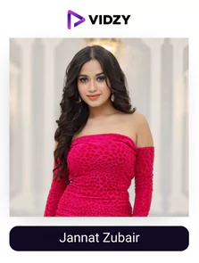
1) Jannat Zubair
Instagram: jannatzubair29
USP:
She could tap into all the trends and make a connect with the audience by bringing relatable content.
Popular television actress Jannat got her start as a young artist. She runs the Complete Styling with Jannat Zubair YouTube channel. With each of her reels receiving millions of views, she has 46.6 million followers with an engagement rate of 1.65%. His reel with his younger brother showing his caste for her is one of her most watched reels.
She is the most well-known Indian Instagrammer in the influencer community, with an average of more than 1 million reactions to each of her posts. She frequently promotes several top brands, including Huawei and OnePlus.
When Jannat Zubari appeared in the Rani Mukerji-starring movie Hichki in 2018, she made her Bollywood debut. In the comedy-drama movie, the talented actor portrayed Natasha and appeared as one of Rani Mukerji’s pupils. Jannat also won the Mumbai Achiever Awards for Best Youngest Actress.
Since 2018, annat Zubair has also appeared in several music albums. Kaise Main, Zindagi Di Paudi, Tere Bina, Ishq Farzi, Bhaiyya G, Naino Tale, Frooty Lagdi Hai, and Fake Style are just a few of the projects she has worked on. She has been able to grow her connect with her audience by staying authentic and transparent with everything. Make sure you follow one of the top Indian social media influencers.
-
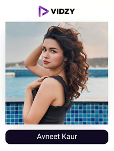
2) Avneet Kaur
Instagram: avneetkaur_13
USP:
She is a young talented actress who often serves relatable trending reels, bts of her shoots and much more keeping her audience hooked.
Avneet began her career as one of the top influences in India by placing in the top three of the stage competition Dance India Dance Li’l Masters on Zee TV. Kaur then participated in Dance Ke Superstars, where she became a member of the “Dance Challengers” group. In the Life OK song “Meri Maa,” in which she played Jhilmil, Avneet made her acting debut. Later, she appeared in the SAB TV comedy “Tedhe Hain Par Tere Mere Hain.”
She later participated with Darsheel Safary in the celebrity dance reality show “Jhalak Dikhhhla Jaa” on Colors TV. One of India’s biggest influencers, Avneet has more than 32.9 million followers on Instagram today with an engagement rate of 1.33%. Her reel with Varun Dhawan has over 11 million views, making it one of the highest-watched reels of hers recently. She won the gold award for debut in a lead role and best onscreen Jodi with Sidharth Nigam in 2019.
She is getting new projects and brand collaborations because of her incredible self-projection skills and dedication towards her work making her one of India’s top social media influencers. In an upcoming project titled “Tiku Weds Sheru,” she is set to take on the lead actress role alongside Nawazuddin Siddiqu
-
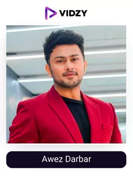
3) Awez Darbar
Instagram: awez_darbar
USP:
you will find the most entertaining dance reels along with other trending stuff keeping you hooked.
Awez Darbar is a dancer, choreographer, and social media influencer from Mumbai. He is one of the top social media influencers, has more than 29.2 Million followers and an engagement rate of 3.71%, and is a well-known comedian and performer. His dancing reel with Nagma Mirajkar has over 14 Million views making it one of his highest-watched reels.
Awez Darbar is a middle-class man from a very conservative family who has quickly attained fame for his outstanding acting and dancing abilities, and his ability to make a connect with his audience through his content. For his fans on various video-sharing websites like TikTok, YouTube, Instagram, and others, he enjoys creating amusing videos and web series. He won digital influencer award for most interesting dance and content creator. Over 79% of people say that receiving user-generated content influences their purchase decisions majorly as per stackla and if you want to do so with your product or service, employing awez to do it is the ideal choice given the authority he reflects in his niche,
If you are looking for some entertainment through dance and amazing reels, or one of the top influencers to collaborate with, this is the ideal one for you!
-
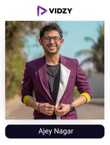
4) Ajey Nagar
Instagram: carryminati
USP:
His roasts, comedy sketches are a treat to watch and reflects uniqueness.
Ajey Nagar, better known online as Carry Minati, is a streamer and YouTuber from the Indian city of Faridabad. On his YouTube channel CarryMinati, he is well-known for his humorous skits and responses to various online topics. His video, YouTube Vs. Tiktok – The End, quickly surpassed all other videos on YouTube India in May 2020.
He not only has the largest independent YouTube channel in India, but he also has a sizable 17.7M Instagram followers and an engagement rate of 5.82%. He consistently receives millions of likes and admiration for his posts. His reel with Ajay Devgan is one of his most viewed reels recently with 26.2 Million views. As his audience is devoted and follows his advice, he works with the leading brands and comes among the top social media influencers in India.
Ajay Nagar aka Carry Minati teams up with beatXP Marv Neo smartwatch, iqoo neo-7. He was recently recognized in Forbes 30 under 30 Asia and time’s 10 next generation leaders. No matter what content carry comes up with, his fans are certain of getting the best quality when it comes to delivery and script. None of his videos are short in views, comments, or likes owing to the years of experience he has in this field and the consistency he has maintained. Today he is at a level where his recommendations influence purchase decisions majorly making him one of the biggest stars.
-
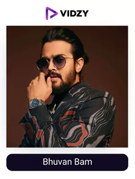
5) Bhuvan Bam
Instagram: bhuvan.bam22
USP:
His ability to make funny, relatable, and authentic content is what keeps him way ahead of others.
Do we really need to introduce this prominent Indian social media influencer? The comedian, singer, and songwriter Bhuvan Bam got his start in social media on YouTube. His comedic series “BB ki Vines,” in which he portrays every member of an average Indian family, is what made him most famous.
His amusing depiction of an ordinary “daily” in an Indian middle-class family offers glimmering glimpses of the significant social and economic issues. He is now one of the most influential people on social media because of winning the hearts of millions. The social media celebrity plays 10 different personas in his online series “Dhindora,” taking it even further!
On Instagram he boasts a following of 17.1 million with an engagement rate of 4.38%. His reel in which he is narrating poetry on his friend is one of his most viewed reel recently with over 17 million views.
If you are on the internet, following Bhuvan bam is a must as he is the trendsetter and one of the top social media influencers in India. As per animoto over 59% customers said that a video being too long no matter if it is of marketing or not will deter them from watching which reflects that you need to grab the attention of the audience in a short video format (as it is the norm), collaborating with Bhuvan can make it a sure shot way of getting success in the campaign given his talent and the authority he reflects.
-
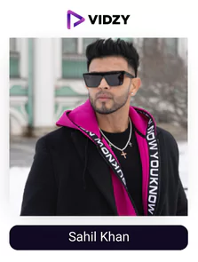
6) Sahil Khan
Instagram: sahilkhan
USP:
From fitness motivation to the best of lifestyle, you will find it all on his account.
Without Sahil Khan, the list of the top Instagram influencers in India is lacking. On social media, Sahil Khan has created a fitness empire with more than 11.4 million followers and an engagement rate of 1.78%. His reel showing his fitness and lifestyle is one of his most viewed reels recently with over 3M views. For anyone interested in bodybuilding, workouts, and fitness tips, Sahil Khan’s Instagram is a must-follow. He was formerly a Bollywood actor.
The Rajiv Gandhi award for India’s fitness icon went to Sahil Khan recently along with various awards won by him related to fitness. He also operates one of the largest gyms in the nation and is regarded as one of India’s top fitness instructors. Sahil is one of the highest-paid social media influencers in India because of his fame and success.
He has been inspired to give back to society by the faith and love of his well-wishers, supporters, and followers from all over the world as well as his additional experience, in-depth knowledge, and thorough understanding of Fitness, Nutrition, and Beauty. Considering this, he established his business, “Sahil Khan Body Transformations,” with the intention of transforming people from all backgrounds to achieve a common objective of healthy living. Make sure you check out his content!
-

7) Kusha Kapila
Instagram: kushakapila
USP:
Her funny content is always trending on the web thanks to her amazing delivery and a great script.
Kusha Kapila is a name you would commonly notice among the top social media influencers in India. Her videos for the media network, iDiva, where she began her writing career, served as the impetus for her foray into the field of digital media and content development.
She is one of the top fashion and entertainment Instagrammers active right now thanks to her beloved identity of “Billi Masi.” She writes on lifestyle, clothing, beauty, skincare, marriage, and, of course, comedy to fill out her page.
She currently has 3.3M Instagram followers who check in for their daily fix of amusement along with an engagement rate of 10% which is amazing. His reel imitating her friends in front of her mother is one of his highest-watched reels recently with over 16M views. She recently won the award for Cosmo India Blogger Awards COMIC OF THE YEAR
Undoubtedly, 2024 is an unforgettable year for her as she graced the Cannes Film Festival, captivating millions with her stunning looks. If you are looking for great humour or want to take motivation for such type of content, she is the one to follow!
-
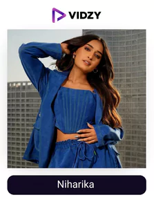
8) Niharika
Instagram: niharika_nm
USP:
She comes up with relatable and hilarious content consistently that will keep you hooked.
Niharika has a massive 2.9M Instagram followers and an engagement rate of 19% because of her playful and carefree videos. Her videos include an accented speech with a tinge of the belly-laugh-inducing alter ego identities that will make you laugh so hard you’ll cry while viewing them. Her reel with Mahesh babu and sesh Adivi is one of her most watched reel recently with over 34.3 million views
She is well-known among well-known fashion Instagrammers for her daily dose of fun and style in addition to the funny representation of real-life GenZ issues. She creates fantastic fashion trends and chic experiments that you can easily incorporate into your daily life.
Her consistency on top of it is what has driven her journey towards success in such a short amount of time. She recently won IWMbuzz digital award for rising digital star. Over 66% of consumers preferred online shopping to offline, according to a globenewswire and the industry of social commerce has accelerated given the new opportunities for businesses and the amazing returns.
If you want to gain unprecedented benefits from it, Niharika is the right one to collaborate with given his amazing creativity levels to make the campaign extremely natural and her connect with the audience which gives her utmost authority in her niche, which is just a click away by partnering with a short video production company like Vidzy! Make sure you check out the content of one of the top social media influencers.
-
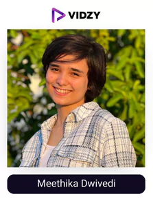
9) Meethika Dwivedi
Instagram: the_sound_blaze
USP:
Each of her content pieces will make you roll on the floor laughing.
Are you finding Instagram to be too monotonous? If so, the first thing you should do is visit Meethika’s account! She has over 2.7M followers and an engagement rate of 17%. Her reel titled “angrej ke devtao” is one of her highest watched reels recently with over 8.7M views. With her blatantly honest takes on the realities of the modern world, this laughter riot has taken the internet by storm.
What is her content’s strongest point? If we had to choose one, it would undoubtedly be her street-smart, Lucknavi-accented ranting in Hindi.
The teen is one of the Instagram influencers with the fastest recent growth because her content is a breath of fresh air. She is listed in the UP Yuva awards and Guinness World Records, and she has received more than 100 medals and trophies in her school as well. Plus, she has won the 2024 Golden Mike Award.
She is without a doubt one of the best and will undoubtedly rank among India’s top social media influencers.
-
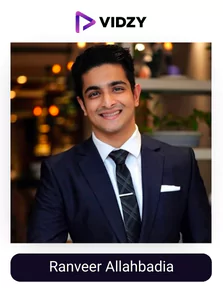
10) Ranveer Allahbadia
Instagram: beerbiceps
USP:
He will educate you in each area of life in the most engaging ways possible.
Ranveer Allahbadia is one of the first bloggers in the country and certainly one of the best social media influencers in India. He has a following of 2.5M and an engagement rate of 5.44%. His reel with john abraham is one of his highest watched reels recently with over 3.8M views. With the launch of his YouTube channel, “Beerbiceps,” in August 2015, Ranveer began his career as a content creator. He has since flourished on social media.
Those who follow him know that he is a “influencer” in the truest sense of the word due to his skill of always inspiring people to rise above their missteps and pursue their dreams tirelessly.
He embodies consistency and discipline, and Forbes lists him as one of the top social media influencers to watch in 2022. He has also won several other awards such as young entrepreneur award – 2020, youth influencer of the year, etc. The most popular podcast in India is “The Ranveer Show,” so check it out if you prefer to listen rather than watch.
-
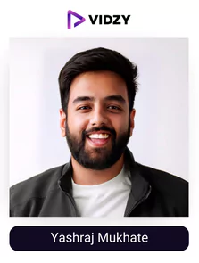
11) Yashraj Mukhate
Instagram: yashrajmukhate
USP:
He makes the most unique tunes out of dialogues you are familiar with.
Ever consider that your favorite line of dialogue could be turned into a song? That sounds odd, doesn’t it? In any case, Yashraj Mukhate is the only person who can turn a dialogue into a song and doing it so flawlessly that you become addicted to it.
Yashraj is so talented that he can be seen making tunes out of ordinary sayings on the spot in many of his appearances. His unique skill has gotten him a loyal fan following of over 2.4M and a great engagement rate of 7.08%. His reel in which he has made a tune out of shehnaaz gill’s dialogue “such a boring day” is one of his highest watched reels recently with over 25.7M views!
He gets many brand collaborations as he is a figure of authority in the niche, he is in. He recently won trendsetter of the year award in mirchi music awards. Make sure you follow him!
-
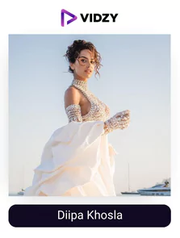
12) Diipa Khosla
Instagram: diipakhosla
USP:
She is one of the finest influencers collaborating with the top brands and acing it.
Diipa is technically not an Indian social media personality, but she is of Indian descent. We were unable to leave her off our list of the top social media influencers in India after her inde wild launch in India, a cosmetic line created specifically for those with colored skin. She has a following of 1.9M with an engagement rate of 0.92%. Her reel reflecting a photoshoot with Tamannah Bhatia is one of her most viewed reels recently with over 5.6M views.
She is a true style icon with a base in Amsterdam and a significant global presence. We adore her because she is constantly an active voice in bringing attention to important social and economic concerns like gender equality, supporting small companies, and celebrating diversity around the world.
Undoubtedly one of the best social media influencers in India this year, Diipa is unapologetically authentic. Numerous ladies look up to the diva because of her sense of elegance, sincerity, and modesty. She has won several awards like the changemaker influencer award by inflow, etc.
-
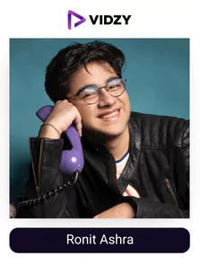
13) Ronit Ashra
Instagram: ronit.ashra
USP:
His mimicry is something you will get addicted to.
You like comedy, right? If so, we bet you are familiar with Ronit Ashra. One of the uncommon creators who experienced fame quickly is Ronit. He began imitating celebrity videos as a hobby, unaware that they would soon propel him to the top of India’s Instagram influencers. His effortless ability to imitate celebrities’ expressions and outfits make watching his videos a never-ending source of amusement.
He has a following of 1.7 million with an engagement rate of 12%. His reel showcasing an imitation of alia bhatt in gangubai kathiadwadi is one of his most viewed reel recently with over 21.1 million views. He recently won the Cosmo India Blogger Awards COMIC OF THE YEAR. In just 18 years of age, his acting skills is nothing short of magical.
Ronit is one of the select few top social media influencers in India to follow in 2024. if you’re looking for some hearty content to help you deal with life’s stresses.
-
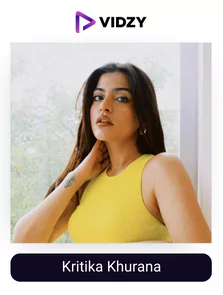
14) Kritika Khurana
Instagram: thatbohogirl
USP:
From talking on various subjects in her podcast to giving fashion motivation, you will find it all on the acc. of this confident and talented girl.
We are aware, Kritika is well-known to all. She became well-known in 2013 thanks to her OOTD photos posted on Instagram. She was one of the first bloggers in India. Later, she began blogging as “thatbohogirl.” The fashion icon is extremely well-liked today across all social media channels, and she also hosts the podcast “UNKUT Kritika.”
Kritika made our list of the top social media influencers due to her ongoing creative development. Another is her talent for making her audience feel “included” in the most significant events in her life.
She has a following of 1.7M with an engagement rate of 3.97%. Her reel showcasing her on a swing in balie is one of her most viewed reels recently with over 2.4M views. She recently won the cosmopolitan lifestyle influencer and fashion influencer of the year.
If you are looking for an influencer who radiates a positive vibe, gives you fashion motivation/tips, educates you on some topics, etc. this account of one of the most popular social media stars in India is the one to head towards.
-
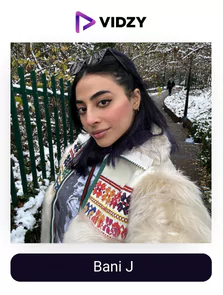
15) Bani J
Instagram: banij
USP:
She is one of the fittest influencers who likes to motivate people with her account towards healthy living.
Gurbani Judge, better known by his stage name Bani J, became well-known after appearing on MTV Roadies and working as a VJ for the network. She participated in Bigg Boss 10, which allowed everyone to see how important fitness is to her.
She even gained notoriety for her part in the Indian web series “Four More Shots Please,” which demonstrates her talent in acting. She has also acted in various other films like aap ka suroor, soundtrack, zorawar, thikka, ishqeria, valimai, etc.
She frequently posts videos of her workouts and healthy eating regimen on Instagram along with bts of shoots. Bani J is one of India’s top social media influencers, particularly for women’s fitness, with over 1.5M followers and an engagement rate of 3.64%. Her reel showcasing her legs after an intense workout is her highest watched reel recently with over 1.6M views. She along with the other actors of four shot please won the Busan’s Asian Contents Awards. Make sure you check out the content of this amazingly talented and confident women!
-
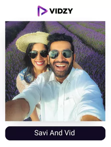
16) Savi And Vid
Instagram: bruisedpassports
USP:
From engaging reels to attention-grabbing storytelling, this account will make you hooked onto its unique content.
These two are social media storytellers, content producers, and photographers. This travel power couple has been travelling extensively for many years, and their passports are covered in bruises and stamps.
Because of the engagement, they encourage among their followers, numerous prestigious hotels, travel partners, cosmetic brands, and many more brands who work with them. On Instagram, they have over 1.2M of loyal fanbase and an engagement rate of 2.34%. Their reels educating 5 countries that don’t require a visa is the highest watched reel recently with over 1.1M views.
They earn money through travel writing, travel, and lifestyle photography, speaking engagements, product reviews, social media campaigns, and consultations because they are subject matter experts of these, and the audience believes in their recommendations making them one of the most popular social media stars in India. They have been featured on nat geo, forbes, discovery,ted, BBC, etc as well.
-
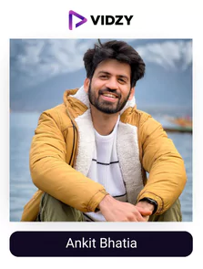
17) Ankit Bhatia
Instagram: ankitbhatiafilms
USP:
His extraordinary skills in filmmaking and passion for travel combined gives an incomparable experience to his audience on his account.
No one can compete with Ankit Bhatia’s content when it comes to travel which makes him one of the most famous social media influencers in India. He began on TikTok and now has 1.2M Instagram followers and an engagement rate of 4.86%. He regularly posts original travel videos, photos, and reels. Selling his video presets and online courses for creating travel videos is his main objective for establishing a strong Instagram presence. His reels reflecting care for loved ones is one of his highest watched reels recently with over 13.1M views.
If you are interested in these fields or want to take motivation to start something of your own in this niche, no other influencer is better than him taking all elements like quality, consistency, etc. in mind.
This is exactly why he has many collaborations with brands: he is seen as a figure of authority and his audience base is loyal. Make sure you check out his content!
-
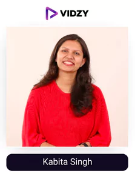
18) Kabita Singh
Instagram: kabitaskitchen
USP:
She will teach you how to make your favorite food at home.
Kabita Singh is a housewife who came from modest circumstances, and her content reflects that. Indian moms and homemakers looking for quick, simple, and novel dishes to try at home have a huge following for Kabita Singh’s quick, simple meals. She has a million Instagram followers who enjoy following her for the newest information on Indian food, DIY cooking techniques, and other cuisines along with an engagement rate of 2.88%. Her reel of instant rava dhokla is one of her most viewed reel recently with 2.2M views.
If you are someone who’s looking for someone to teach them how to make anything from quick meals to time taking dishes that are as tasty as you’ll get in the best restaurants then you don’t need to look any further as Kabita is one of the most famous social media influencers in India when it comes to teaching food, even Diljit Dosanjh has thanked her for teaching her a lot of dishes through her content in lockdown. Make sure you check out her content!
-

19) Karan Dua
Instagram: dilsefoodie
USP:
He is the king of the food review niche and posts amazing food reviews from all around the country for you to try.
Karan Dua is a food blogger from Delhi who has gained utmost authority in the niche with audience trusting whatever he says. On his “Dil se Foodie” YouTube channel, he publishes reviews and recipes for food. His influence has transferred to his instagram as a result where he often shares BTS of his shoots, various food reviews, collabs. He has over 1.1M followers and an engagement rate of. his reel showcasing deep freid anda paratha is one of his most viewed reels recently with over 8.1M views.
He is always in search of good food no matter if it is a small stall or a big restaurant, his intention of providing you with the information about which place has the best food is what has helped him keep the quality of his content superior from the start. Moreover, he is one of the most consistent when it comes to posting content and adding value. Make sure you follow one of the finest Indian social media influencers.
-
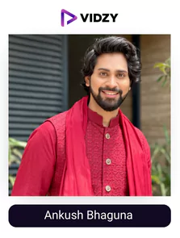
20) Ankush Bhaguna
Instagram: ankushbahuguna
USP:
He will serve you with the best comedy, fashion, and lifestyle content.
Ankush Bahuguna’s Instagram feed is characterized by cringe-inducing but entertaining reels, insightful sketches, satirical videos, anti-stereotypical content, and relatable humour. It was simple for him to land on this list of the top social media influencers in India thanks to these traits in his material. Ankush, who has previously appeared in videos for MensXP and iDiva, also has his savage mother in some of the videos.
With 1M followers and an engagement rate of 11%, he is one of the top Indian Instagram influencers. His reel titled “your parents found your phone unlocked” is one of his highest viewed reel recently with over 4.6M views. Ankush is renowned for wearing stylish cosmetics, living the drip life, and posting humorous clips and posts on Instagram. For a daily dose of humour that will make you giggle nonstop, check out the Instagram handle of one of the top social media influencers in India.


To Sum Up –
As per thinkwithgoogle over 70% teens trust the recommendations of influencers than celebrities, this is since consumers have become smart and know when they are just being served with a sales pitch with the celebrity having nothing to do with the service or product. Top social media Influencers in India on the other hand have an unparalleled amount of trust amongst their audience and they know that if something is being recommended by them, it will be genuine and good.
You can leverage this trust with the help of the top video production company, so what are you within for? Get in touch with them now!